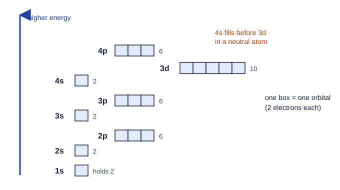

Coulomb's law: the one force behind it all
An atom is a positive nucleus surrounded by negative electrons. Opposite charges attract, and the strength of that attraction explains most of what this unit covers: why some electrons are easy to remove, why atoms have the sizes they do, and why elements form the ions they form.
Coulomb's law says the force between two charges is proportional to the product of the charges divided by the square of the distance between them:
F ∝ q₁q₂ / r²
- Larger charges, stronger force. Doubling one charge doubles the force.
- Greater distance, much weaker force. Doubling the distance cuts the force to one quarter, because the distance is squared.
Opposite charges attract; like charges repel. The equations sheet gives Coulomb's law, and the exam expects you to reason with it in words: name the charges, name the distance, and say which one changes.
Worked example. Pair P is a +1 and a −1 charge 200 pm apart. Pair S is a +2 and a −2 charge 400 pm apart. Compare the forces.
P: (1)(1)/200² = 1/40,000. S: (2)(2)/400² = 4/160,000 = 1/40,000.
The forces are equal. S has four times the charge product, but twice the distance divides the force by 2² = 4. Comparing only the charges would give the wrong answer.
Potential energy
Two attracting charges have potential energy, stored energy due to their positions. For opposite charges it is proportional to q₁q₂/r (one power of r), and it is negative: the closer and more highly charged the pair, the lower (more negative) its potential energy, and the more energy it takes to pull them apart. An electron close to a nucleus has low potential energy and is hard to remove.
Shells, subshells and orbitals
Electrons do not orbit the nucleus like planets. Each electron occupies a region of space where it is likely to be found. These regions are organized in levels:
- Electron shells, numbered n = 1, 2, 3, … Higher shells are on average farther from the nucleus, so their electrons are held less tightly and have higher energy.
- Each shell is divided into subshells, labeled s, p and d. Shell 1 has only 1s; shell 2 has 2s and 2p; shell 3 has 3s, 3p and 3d.
- Each subshell is made of orbitals, each holding at most two electrons. An s subshell has 1 orbital (2 electrons), a p subshell 3 (6 electrons) and a d subshell 5 (10 electrons).
| Shell | Subshells | Electrons the shell holds |
|---|---|---|
| n = 1 | 1s (2) | 2 |
| n = 2 | 2s (2), 2p (6) | 8 |
| n = 3 | 3s (2), 3p (6), 3d (10) | 18 |
Keep the words straight: the exam's readers note that students mix up shell, subshell and orbital. A shell is a level (n = 3); a subshell is part of it (3p); an orbital is one of the 2-electron spaces in a subshell.
Electron configurations
An electron configuration lists the occupied subshells and how many electrons each holds, as superscripts. Electrons fill the lowest-energy open subshell first. This filling rule is the aufbau principle, and the order is (Figure 1):
1s → 2s → 2p → 3s → 3p → 4s → 3d → 4p

Worked example. Write the electron configuration of sulfur, which has 16 electrons.
Fill in order: 1s² (2), 2s² (4), 2p⁶ (10), 3s² (12), 3p⁴ (16).
Sulfur: 1s² 2s² 2p⁶ 3s² 3p⁴. Check: the superscripts add to 16.
Noble gas notation shortens this. Write the noble gas before the element in brackets for the filled inner shells, then the rest: sulfur is [Ne] 3s² 3p⁴, since neon is 1s² 2s² 2p⁶.
Worked example. Iron has 26 electrons. Write its configuration.
Argon accounts for 18. Then 4s fills (2 more, 20), then 3d (6 more, 26).
Iron: [Ar] 4s² 3d⁶.
Ions
For an anion, add electrons to the next open subshell: Cl (17 e⁻) is [Ne] 3s² 3p⁵, and Cl⁻ (18 e⁻) is [Ne] 3s² 3p⁶. For a cation, remove electrons from the highest shell first. For transition metals that means the 4s electrons go before any 3d electrons, because 4s is in a farther shell: Fe²⁺ is [Ar] 3d⁶, not [Ar] 4s² 3d⁴. The readers report this slip often.
A few elements (chromium and copper are the famous ones) do not follow the aufbau order exactly. Writing those exceptions is not tested.
Valence and core electrons
Electrons in the outermost occupied shell are valence electrons. They are the farthest from the nucleus, the most loosely held, and the ones that take part in chemical reactions. Electrons in the inner shells are core electrons.
Sodium, 1s² 2s² 2p⁶ 3s¹, has 1 valence electron (3s¹) and 10 core electrons. Phosphorus, [Ne] 3s² 3p³, has 5 valence electrons, counting both the 3s and the 3p.
Core electrons sit between the nucleus and the valence electrons. Their negative charge repels the valence electrons and partly cancels the nucleus's pull. This is shielding. A valence electron feels the attraction of the protons minus most of the effect of the core electrons in between.
Ionization energy
Ionization energy is the energy needed to remove an electron from an atom in the gas phase. The first ionization energy removes the most loosely held electron. It is a direct measure of Coulombic attraction: the more strongly an electron is held, the more energy it takes to remove.
Worked example. Explain why removing the outer electron from lithium (1s² 2s¹) takes more energy than from sodium (1s² 2s² 2p⁶ 3s¹), even though sodium has more protons.
Claim: lithium's valence electron is held more strongly.
Reasoning: lithium's 2s electron is in shell 2, close to the nucleus, behind only 2 core electrons. Sodium's 3s electron is in shell 3, farther away, behind 10 core electrons. The greater distance and the greater shielding weaken the attraction on sodium's electron more than its extra protons strengthen it, so less energy removes it.
Notice what the answer does: it names the shell (distance), the core electrons (shielding) and the protons (charge), for both atoms. Answers that say only "sodium is bigger" or "lithium wants to keep its electron" do not earn the point.
Quantum numbers, a more detailed labeling of each electron, are beyond the scope of this course.